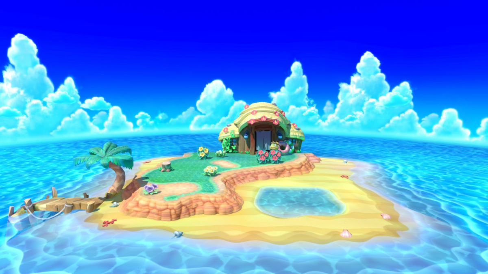
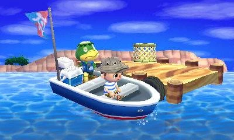

Tortimer Island
Come explore Tortimer's Island, a fictional location from Animal Crossing: New Leaf! It's
conveniently located one boat ride away from every player's island, and you can visit whenever you please by
getting a ride with a musical turtle known as Kapp'n!

Owned by Mr. Tortimer of Tortimer Island.